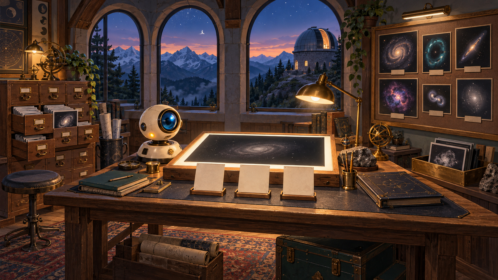
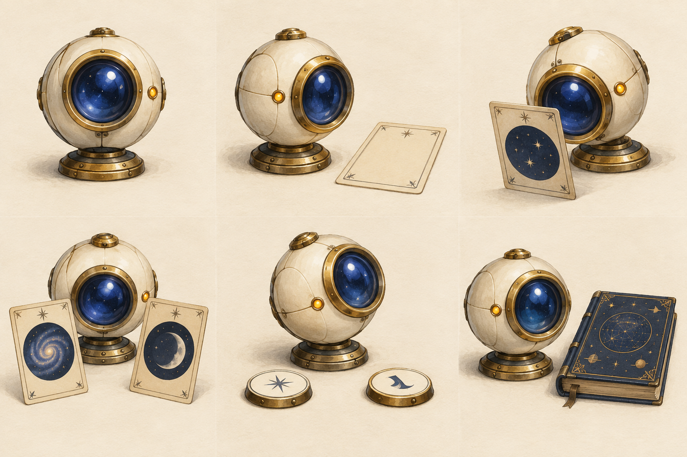
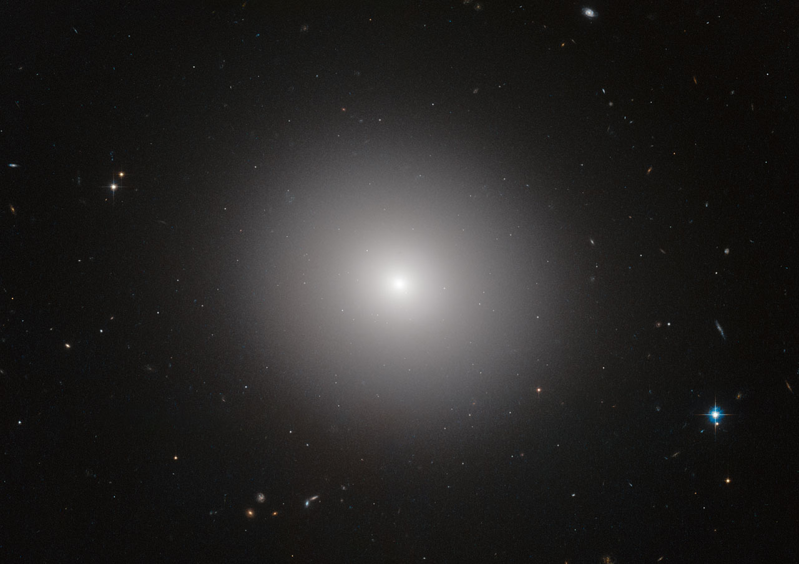
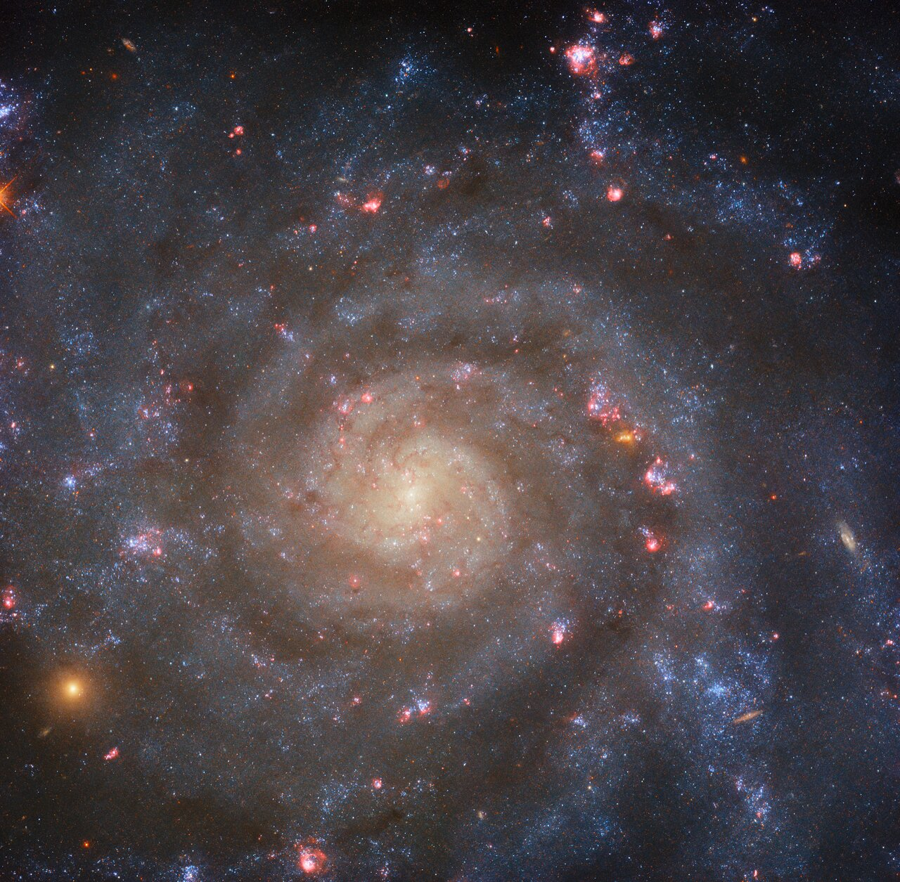
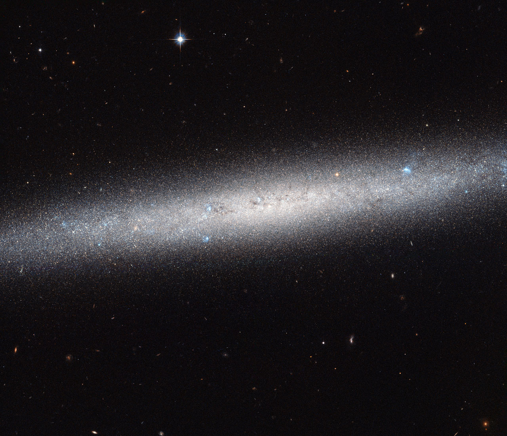
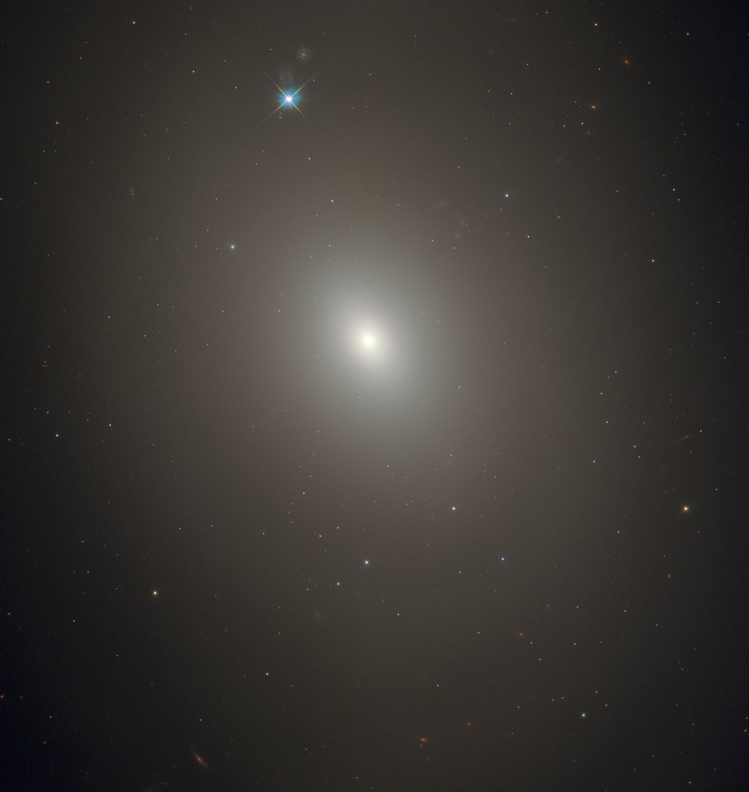

Современная наука
Рабочие станции и крупные экраны; архивы и ковёр сохраняют обжитость комнаты.
Science Day · дизайн игры · 6 октября 2026
Проект будущей игры. Иллюстрации — концепты, фотографии — реальные справочные примеры. Демонстраторы показывают управление, не обучают и не оценивают модель.
Новый визуальный концепт · редакция 2
Ночью телескоп собрал снимки. Сегодня мы с новым помощником разбираем галактики и готовим следующую программу наблюдений.
Выберите рабочее место на новом концепте.
Рабочие станции и крупные экраны; архивы и ковёр сохраняют обжитость комнаты.
Горный рельеф и верхняя площадка телескопа входят в композицию. Мозаику без референса не выдумываем.
Двуногий помощник по Microduck вместо латунного шара. Его движения не зависят от качества разметки.
Смена света в будущей игре идёт по этапам, без таймера. Здесь показан статичный концепт; WebGL-сцена и анимация персонажа ещё не реализованы.
Дизайн-документ игры · 6 октября 2026 · проект для обсуждения и подготовки вертикального среза
Рабочее название: «Первая смена: атлас галактик». «Космический зоопарк» — возможное название дополнительной выставки внутри игры и отсылка к Galaxy Zoo, а не заявление о партнёрстве. Основной сценарий: сцены, реплики и работа стендиста.
Документ определяет будущую игру. Иллюстрации окружения — концепты, схемы экранов — проект, демонстраторы механик — пробы взаимодействия. Это не готовая игровая сборка. Целевые длительности, размеры и качество модели ниже — проектные условия, если явно не указано измерение.
Ребёнок заступает на смену в горную обсерваторию. У нового машинного помощника тоже первый рабочий день. Вместе со стендистом ребёнок рассматривает настоящие снимки галактик, готовит примеры их видимого облика, проверяет ответы помощника и собирает маленький проверенный атлас. По мере работы комната меняется: прибывшие снимки переходят из архива на стол, затем — на стену атласа; спорные случаи остаются отдельной очередью. К рассвету видно, что сделала команда и что ещё предстоит исследовать.
Обещание игроку: «Помоги новому ИИ разобраться в галактиках и собери атлас, которому можно доверять».
Обещание факультета: через конкретные действия объяснить данные, разметку, обучение, независимую проверку и применение ИИ в реальной работе. Большая модель и сложные термины не являются наградой сами по себе.
| Решение | Статус | Следствие |
|---|---|---|
| Галактики вместо движущихся следов | Принято в обсуждении | Один пример — изображение галактики, три учебные категории |
| Живой стендист вместо Ники | Принято | Персонаж в комнате — только помощник; инструкция доступна и без непрерывной речи взрослого |
| Все вычислительные варианты подготовлены заранее | Принято | Runtime выбирает пакет результатов; живого обучения, API и генеративного чата нет |
| Игра работает без интернета | Принято | Локальные изображения, реплики, шрифты, результаты, справки и сохранения |
| Общие комментарии к опубликованному документу | Реализовано для сценария; применяется к GDD | Это отдельный сервер обсуждения, не часть офлайн-игры |
| Иллюстрированная комната и крупный рабочий стол | Предлагаемый основной визуальный подход | Пространственная игра с переходами; разметка не превращается в постоянную таблицу |
| Основная механика — рассмотреть, затем выбрать метку | Рекомендовано для первого среза | Drag-and-drop только необязательное ускорение |
| Три категории видимого облика | Учебная схема, требует проверки на изображениях | «Гладкая», «Видна спираль», «Диск с ребра»; сомнение вне классов |
| Vanilla JS, DOM и canvas | Рекомендуемое переиспользование текущего стека | Новый движок и WebGL не нужны для этой версии |
Первый интерес — разглядеть необычный настоящий объект. Второй — помочь персонажу, который не умеет всё заранее. Третий — увидеть последствия собственного решения: изменение примера влияет на конкретные ответы помощника, а проверенные записи становятся частью общей стены атласа.
У игры нет заработка очков за слепую скорость и нет обязательного поражения перед успехом. Важные события — найденная деталь, обоснованная метка, разобранное расхождение и честное «недостаточно данных». Если метки удачны с первой попытки, история продолжается без выдуманной ошибки.
| Действие | Видимое последствие | Понятие |
|---|---|---|
| Приблизить изображение и отметить деталь | Деталь сохраняется в карточке как основание наблюдения | Данные и признаки |
| Выбрать категорию | Пример занимает место в учебной подборке | Разметка |
| Открыть эксперимент | На новом изображении появляется ответ и объяснение выбранного способа | Машинное обучение |
| Сверить ответ с проверкой | Виден конкретный правильный или ошибочный ответ | Качество на новых данных |
| Исправить метку или выбрать дополнение | Сравнение ответов до/после, включая отсутствие изменений | Влияние данных |
| Передать атлас | Отделены проверенные записи, предложения и сомнения | Ответственное использование результата |
Один сюжет без выбора возраста. Стендист регулирует глубину объяснения, интерфейс предлагает дополнительные шаги по интересу. Для планирования первого теста предполагаем основную смену порядка 8–12 минут и ещё 5–8 минут на лабораторию; это гипотеза, не обещание посетителям. Короткий проход должен содержать хотя бы разметку, один новый проверочный пример и итог.
Двое детей могут меняться ролями «предлагает метку / ищет основание». Игра не требует читать мелкий текст и не превращает помощь стендиста в скрытую обязательную операцию.
Камера неподвижна, с мягким приближением к выбранному рабочему месту. За арочным окном — горы, купол и ночь. Внутри — дерево, эмаль, бумажные карточки, аккуратные оптические приборы. Техника выглядит доступной для исследования; помещение не похоже на космический военный командный центр.
Окружение рисуется растром. Текст, кнопки и состояния не запекаются в картинку. Перспективные предметы дают атмосферу, а удобство чтения обеспечивает отдельный фронтальный рабочий экран.

Художественный концепт, созданный image_gen; галактики внутри рисунка иллюстративны. Научные снимки показаны отдельно ниже.
| Зона | Расположение в комнате | Игровая функция | Изменение за смену |
|---|---|---|---|
| Архив | Левая часть | Получить подготовленную подборку | Пачка снимков становится меньше |
| Стол исследования | Центр, главный визуальный акцент | Приблизить снимок, заметить деталь, выбрать метку | Появляются карточки выбранных примеров |
| Помощник | Небольшой прибор рядом со столом | Показать эксперимент, объяснить ответ | Индикация текущего рабочего состояния |
| Атлас | Правая стена | Смотреть проверенные записи | Пустые места заполняются карточками |
| Очередь разбора | Отдельный лоток рядом с атласом | Сохранить сомнительные случаи | Сомнения видны, но не считаются провалом |
| Окно и купол | Дальний план | Атмосфера, необязательная справка | В финале появляется рассвет |
Переход: комната → архив → стол → проверка → атлас → комната. После значимого действия ребёнок возвращается к видимому изменению в комнате. Не заставляем проходить её заново после каждой метки: разметка небольшой серии происходит на одном столе.
| Элемент | Направление |
|---|---|
| Палитра | Чернильно-синий #152D43, тёплая бумага #F3EBDD, янтарный #E7B65A, спокойный бирюзовый #73B5AE |
| Предупреждения | Цвет плюс текст и значок; «нужно проверить» не обязательно красное |
| Типографика | Локальный кириллический шрифт с проверенной лицензией либо системный fallback; основной текст целимся в 18–20 CSS px |
| Кнопки | Целевая область не меньше 44×44 CSS px; подпись — действие |
| Иллюстрации | Мягкая живописность, читаемые силуэты, спокойный фон вокруг снимков |
| Научные изображения | Нейтральная тёмная подложка; без цветового фильтра «под стиль игры» |
| Анимация | Короткий переход между состояниями, ориентир 200–400 мс; без постоянных мерцаний и обязательного движения |
| Звук | По умолчанию выключен; мягкий отклик действий, ничего важного только через звук |
Все значения — стартовые проектные ориентиры. Контраст и читаемость проверяются в отрисованном интерфейсе, в том числе при масштабе 125% и 150%.
Небольшой настольный оптический прибор: устойчивое основание, светлая эмалевая оболочка, одна линза и спокойный индикатор. Он физически находится в комнате. Ребёнок помогает готовить исследовательский инструмент, а не кормит виртуального питомца или заботится о его настроении.
Рабочее обращение — «Помощник». Имя можно выбрать после просмотра концептов. Не привязываем персонажа к бренду конкретной модели ИИ.

Художественный концепт image_gen: шесть состояний одного прибора, не готовый игровой атлас анимаций.
| Состояние | Что видно | Реплика |
|---|---|---|
| Знакомство | Линза активируется, рядом появляется первый снимок | «У меня первая смена. Покажешь, какие признаки будем различать?» |
| Ожидает примеры | Видна небольшая незаполненная подборка | «Мне нужны изображения с метками» |
| Примеры готовы | Карточки собраны; доступна кнопка эксперимента | «Посмотрим, как я справлюсь с другими снимками?» |
| Показывает результат | Подсвечен выбранный ответ и основание | «Я предложил эту категорию по таким примерам» |
| Есть расхождение | Спокойный индикатор и знак вопроса | «Здесь ответы различаются. Давай проверим» |
| Смена завершена | Рядом лежит журнал, не медаль «идеальный ИИ» | «В атласе видно, что проверено и где ещё есть вопросы» |
Эмоции не заменяют сведения о модели. Грустный персонаж не используется как наказание за неверную метку. Во время готового эксперимента не показываем фиктивную многоминутную загрузку обучения: открываем сохранённые этапы с подписью.
Galaxy Zoo даёт смысловую опору: множество разных форм, внимательное наблюдение, общий вклад людей. Визуальный образ — полевой атлас, музейная коллекция снимков и карточки с заметками. Галактики не превращаются в зверей, категории не называются биологическими видами, класс «диск с ребра» не изображается новым типом живого существа.
| Вариант | Как выглядит | Где полезен | Решение |
|---|---|---|---|
| Атлас наблюдателя | Карточки, закладки, поля для заметок, галерея проверенных изображений | Основной маршрут и финал | Основной вариант |
| Прогулка по галерее форм | Три части выставки, переходы между галактиками, стенд «ещё разбираемся» | Дополнительное знакомство | После базового среза |
| Буквальный зверинец | Персонажи-звери и клетки | Отвлекает от свойств реальных снимков | Не используем |
В финале — карточка «Это похоже на настоящую науку» с Galaxy Zoo, проверенными источниками и необязательным QR/ссылкой для знакомства позже. Логотип проекта не используется как наш бренд; никаких обещаний официального участия. Снимки не отправляются в Galaxy Zoo автоматически.
| Экран | Главное действие | Что постоянно видно | Что раскрывается по запросу |
|---|---|---|---|
| Комната | Открыть актуальное рабочее место | Цель смены, прогресс, помощник | История обсерватории, настройки |
| Справочник | Сравнить три эталона | Изображения и один признак у каждого | Ограничения категорий |
| Стол | Рассмотреть и выбрать метку | Крупный снимок, 3 выбора, сомнение, номер примера | Источник, подсказка, измерения |
| Учебная подборка | Проверить состав и открыть эксперимент | Собственные метки, подготовленная часть набора | История изменений |
| Проверка | Сопоставить ответ и основание | Один новый снимок, ответ, сверка | Распределение ошибок по группам |
| Лаборатория | Выбрать подготовленный вариант | Какие условия меняем | Сохранённые этапы и детали метода |
| Атлас | Передать смену | Проверенные записи и сомнения отдельно | Журнал, источники, отраслевой пример |
Основной расчёт — CSS viewport, а не число физических пикселей. Full HD при масштабе 150% даёт существенно меньше пространства. Проектируем рабочий стол прежде всего для 1280×720 CSS px и проверяем более низкую доступную высоту с браузерными панелями.
Центральный снимок получает около 55–65% ширины рабочей области. Справа — компактная колонка решений; подпись помощника занимает одну-две строки. Источник и научные пояснения закрыты по умолчанию. На узком экране кнопки перемещаются под снимок; изображение и решение не разделяются большим полотном текста.
Запрет на скрытые действия: никакой важной кнопки только по hover, никакого обязательного перетаскивания, никакого уменьшения всего интерфейса до нечитаемого масштаба. Tab проходит контролы в осмысленном порядке; Enter/Space подтверждают; Escape закрывает справку и возвращает фокус.
Варианты решают одну учебную задачу. Отличаются способом взаимодействия, а не научной постановкой. В HTML ниже размещены демонстрационные раскладки: они не обучают модель и не оценивают корректность меток.
Переключайте раскладки и выбирайте метки. Демонстрация не оценивает правильность и не показывает качество обучения.
Выберите изображение и попробуйте действие.
Фото — ESA/Hubble; полный кредит показан у каждого изображения. Здесь образцы не являются обучающей или проверочной выборкой. Соседи в варианте C иллюстрируют расположение элементов, а не вычисленное сходство.
Один крупный снимок, лупа, три эталона и кнопки категорий. Ребёнок сначала рассматривает объект, затем выбирает метку. Можно отметить интересную деталь; она сохраняется как заметка, но не становится автоматически числовым признаком модели.
Последовательность: открыть → приблизить → выбрать метку → увидеть карточку на доске → следующий пример. «Не уверен» оставляет решение открытым и предлагает справочник. Первый снимок разбирается со стендистом, остальные — самостоятельно.
Сильная сторона: видно, что ребёнок классифицирует, удобно обсуждать основания. Риск: однообразие серии. Как проверить: наблюдать, продолжает ли ребёнок рассматривать изображения или начинает нажимать наугад; менять сложность случаев, а не добавлять фейерверки.
Небольшая группа карточек и три подписанные области. Клик по карточке открывает крупный просмотр; категорию можно выбрать кнопкой или перенести карточку. Надпись и миниатюра эталона помогают отличать области без знания терминов.
Использование: проверка состава уже размеченной выборки, поиск однообразия, исправление конкретной метки. Риск: ребёнок сортирует по декоративному цвету рамки. Все неразмеченные карточки выглядят одинаково; цвет группы появляется только после решения.
Это не обязательный первый экран: для знакомства с объектом важнее крупный снимок.
Новый объект в центре и несколько действительно близких учебных изображений рядом. Ребёнок предполагает ответ и открывает метки соседей. Видит, почему метод похожих примеров дал именно этот ответ.
Использование: сцена «Почему?» и разбор ошибки. Риск: подмена настоящего основания визуально удобными картинками. Соседи и расстояния берутся из того же подготовленного эксперимента, что и ответ.
Рекомендация: A — основной процесс; B — обзор; C — объяснение. Не предлагаем ребёнку три разных интерфейса для одной операции на входе. Сначала проверяем одну связку A → B → C на реальных изображениях.
Три категории — «Гладкая», «Видна спираль», «Диск с ребра». Они описывают видимое строение в ограниченной учебной подборке. Физический тип и ракурс не смешиваются: гладкий вид не гарантирует эллиптическую природу, а вид с ребра сам по себе не создаёт новый тип галактики.
Справочник показывает и границу применимости. Размытое изображение или сложная структура отправляются в очередь разбора. «Не уверен» не становится четвёртым классом. Отсутствие видимых рукавов на плохом снимке не считается доказательством гладкого строения.

Гладкий профиль без различимых рукавов. Это пример видимого облика; не любое гладкое изображение устанавливает эллиптическую природу.
Источник: IC 2006 · ESA/Hubble. Credit: ESA/Hubble & NASA; Image acknowledgement: Judy Schmidt and J. Blakeslee (Dominion Astrophysical Observatory); Science acknowledgement: M. Carollo (ETH, Switzerland). CC BY 4.0. Официальный screensize JPEG, без изменений.

Спиральная структура хорошо видна. Цвет не служит самостоятельным основанием учебной метки.
Источник: IC 5332 · ESA/Hubble. Credit: ESA/Hubble & NASA, R. Chandar, J. Lee and the PHANGS-HST team. CC BY 4.0. Официальный screensize JPEG, без изменений.

Диск виден с ребра. Источник описывает объект как спиральную галактику: ракурс и физический тип различаются.
Источник: NGC 5023 · ESA/Hubble. Credit: ESA/Hubble & NASA. CC BY 4.0. Официальный screensize JPEG, без изменений.

Дополнительный разговор: видимый гладкий облик не определяет всю физическую природу объекта. Не заставляем выбирать «Не уверен» только из-за промежуточного физического типа.
Источник: Messier 85 · ESA/Hubble. Credit: ESA/Hubble & NASA, R. O'Connell. CC BY 4.0. Официальный screensize JPEG, без изменений.
Красивые обзорные изображения в этом документе служат визуальными примерами. Они не образуют автоматически обучающую выборку: у разных телескопов различаются разрешение, цветовое представление и поле зрения. Модель может выучить эти различия вместо формы галактики. Подборка для игры требует отдельного допуска и единообразной подготовки.
Синтетические галактики допустимы только как подписанная иллюстрация интерфейса. Они не выдаются за реальные наблюдения и не смешиваются с проверочными данными.
Стартовая реплика: «У помощника первая смена. Подготовим ему примеры галактик, проверим ответы и соберём каталог». Во время работы стендист спрашивает: «Что заметил? Почему выбрал эту метку? Что предложил помощник? Как проверим?»
| Событие | Обратная связь игры | Действие стендиста |
|---|---|---|
| Ребёнок выбрал метку | Карточка получила метку; ещё нет зелёного «правильно» | Попросить основание на одном показательном примере |
| Ребёнок сомневается | Доступен справочник и очередь разбора | Уточнить, какой детали не хватает |
| Проверка выявила расхождение | Показать объект и справочное основание | Отделить ошибку разметки от ограничения модели |
| Метки исправлены, ответ не изменился | Честно показать отсутствие изменения | Обсудить, что ещё влияет на результат |
| Первая попытка удачна | Разрешить завершение или сложный опыт | Не придумывать обязательный провал |
| Модель справилась не со всем | Разделить проверенные записи и сомнения | Завершить смену с обоснованным ограничением |
Итог — не экзамен на термины. Ребёнок объясняет, какую работу выполнил помощник и как её проверяли. Пример с заводом переносит ту же цепочку на фотографии деталей и известные категории дефектов. Сомнение и новый неизвестный дефект требуют отдельной проверки, а не автоматического назначения знакомого класса.
Игра работает в современном браузере без сети. Ребёнок вместе со стендистом готовит ИИ-помощника к многоклассовой классификации изображений галактик. Обязательные категории — smooth («Гладкая»), spiral («Видна спираль») и edge_on («Диск с ребра»). Это три взаимоисключающие учебные метки для заранее допущенных изображений, а не полная астрономическая классификация.
В основной смене модель получает шесть эффективных меток: ребёнок ставит их сам либо в коротком маршруте добавляет свои к явно отделённым подготовленным меткам. Для трёх категорий существует 3^6 = 729 возможных векторов разметки. У каждого допустимого вектора заранее рассчитан результат эксперимента: предложения на наборе разбора, матрица ошибок, объяснение и следующая содержательная ветка. Игра не запускает обучение модели, не вызывает API и не выдаёт предрасчёт за вычисление в данный момент.
Стендист — живой наставник, а не персонаж в интерфейсе. ИИ-помощник — единственный персонаж: он показывает, какие примеры получил, что предложил и какие ограничения обнаружились. Реплики, метрики и варианты ответов лежат локально.
<img> с локальным файлом или <canvas> при необходимости увеличения/аннотаций. Canvas не является источником истины разметки.Ниже зафиксированы проверенные свойства репозитория, на которые можно опираться, а не требования к новому продукту.
| Наблюдение | Основание | Следствие для новой игры |
|---|---|---|
app/index.html — локальная автономная поставка, описанная в README; README не подтверждает, какой runtime сейчас опубликован. |
README.md, app/index.html |
Способ автономной поставки полезен как прецедент, но не задаёт место новой реализации. |
Публичный сценарий расширяет зафиксированный образ comparison runtime: tools/scenario-review/Dockerfile.web наследует sd2026-comparison:before-comments-20261006, а designlab/comparison/Dockerfile публикует night.html как index.html. |
tools/scenario-review/Dockerfile.web, designlab/comparison/Dockerfile |
Ближайший runtime для новой версии — designlab/comparison; публикация требует отдельного решения после готовности среза. |
В app/ и comparison runtime применяются локальные JS/CSS-файлы, DOM и canvas; npm содержит только Prettier. |
app/index.html, designlab/comparison/index.html, package.json |
React, Phaser или сборщик для новой механики не нужны. |
Текущая ночная игра отделяет правила кампании от DOM: NightModel не рисует экран, а night.js управляет состояниями и локальным сохранением. |
designlab/comparison/night-model.js, designlab/comparison/night.js |
Такое же разделение следует сохранить, но с новым доменом галактик. |
Предыдущая ночная смена сохраняет JSON в localStorage, умеет инвалидировать результат обучения при изменении разметки и проверяет подпись снапшота при восстановлении. |
designlab/comparison/night.js, designlab/comparison/night-model.js |
Это полезный прецедент, но старое состояние нельзя читать как состояние новой игры. |
Скрипт build-night.py упаковывает явный список локальных ресурсов и добавляет контентные хэши к ссылкам. |
designlab/comparison/build-night.py |
Новая поставка должна иметь явный манифест и не зависеть от случайных файлов рабочей папки. |
Размер, происхождение и научная пригодность будущих изображений галактик пока не проверены. Поэтому названия файлов, метрики и квоты ниже — проектные решения до приёмки набора данных.
Предлагаемая директория находится рядом с текущей поставкой, чтобы не смешивать её с переходным кодом ночной смены.
designlab/galaxy-shift/
├── index.html # точка входа; открывается по file:// и HTTP
├── galaxy-shift.css # адаптивный layout, reduced motion, печать
├── data/
│ ├── manifest.js # версия данных, пути, provenance, контрольные суммы
│ ├── samples.js # описания изображений, категории, доступность
│ ├── experiments.js # таблица 729 предрассчитанных результатов
│ ├── copy.js # реплики помощника и короткие объяснения
│ └── gallery/ # локальные WEBP/PNG; без ленивой загрузки по сети
├── src/
│ ├── model.js # чистые правила, валидация, переходы, миграции
│ ├── state.js # создание/сохранение/восстановление смены
│ ├── ui.js # DOM-рендер и обработчики событий
│ ├── image-viewer.js # zoom, фокус, доступные подписи, canvas-аннотации
│ ├── presenter.js # панель стендиста и режим объяснения
│ └── export.js # локальная выгрузка журнала как HTML/JSON
└── tools/
├── build-galaxy-shift.py # проверка манифеста и автономная ZIP-поставка
└── check-galaxy-shift.mjs # инварианты данных и переходов
Сценарный текст остаётся в docs/, а не копируется руками в код: data/copy.js получает короткие реплики, утверждённые из сценария. Одна версия набора (datasetVersion) связывает изображения, справочную разметку, эксперименты и тексты объяснений.
| Модуль | Делает | Не делает |
|---|---|---|
model.js |
Валидирует метку, строит ключ из шести меток и полной конфигурации опыта, находит вариант эксперимента, инвалидирует зависимые результаты. | Не читает DOM, localStorage или изображения. |
state.js |
Загружает JSON, применяет миграцию, сохраняет только валидное состояние. | Не считает метрики и не выбирает «правильный» ответ. |
ui.js |
Показывает этап, карточки, состояние кнопок и доступные действия. | Не содержит скрытый ключ разметки и не меняет состояние напрямую. |
image-viewer.js |
Рисует изображение/маркер, обеспечивает масштабирование и клавиатурное управление. | Не меняет метку при визуальном клике без явного выбора категории. |
presenter.js |
Показывает стендисту вопрос следующего шага и расширенное объяснение. | Не открывает правильные ответы ребёнку до разрешённой сцены. |
experiments.js |
Содержит только заранее рассчитанные результаты и объяснения. | Не выполняет обучение или случайный выбор. |
Каждый игровой пример — локальная вырезка с одной галактикой в центре. В samples.js хранятся только идентификаторы, видимые метаданные, путь к уже допущенному файлу и роль в игре. Справочная метка не показывается до точки, определённой сценарием.
const SAMPLE = {
id: 'train-03',
image: 'data/gallery/train-03.webp',
alt: 'Астрономическое изображение: одна галактика расположена в центре кадра.',
role: 'training', // training | review | final | reference | doubtful
referenceLabel: 'spiral', // доступно модели, но не обычному UI до разбора
admissibleLabels: ['smooth', 'spiral', 'edge_on'],
provenanceId: 'gz-source-042',
teachingNotes: ['spiral_arms_visible'],
quality: 'clear', // clear | difficult; difficult не попадает в шесть обязательных
width: 768,
height: 768
};
У doubtful нет принудительной справочной метки для ребёнка: это материал очереди сомнений после основной проверки. Он не используется для вычисления метрик и не может тихо превратиться в один из трёх классов.
До выбора метки alt остаётся нейтральным и не называет категорию или её отличительный признак. Это предотвращает случайную подсказку читателю экрана. В карточке стендиста может быть отдельный набор вопросов внимания («Что на форме кажется круглым, вытянутым или узорчатым?»), но он не раскрывает эталон и не включается в игроковый DOM как скрытый текст. После выбора можно открыть доступное объяснение наблюдаемых признаков и основания справочной разметки. Эквивалентный самостоятельный сценарий для незрячего ребёнка требует отдельного пользовательского теста: нельзя объявлять его решённым одним alt или вынуждать ребёнка угадывать по названию кнопки.
Порядок шести обучающих идентификаторов фиксирован в manifest.js и показывается в интерфейсе как шесть карточек. Метки кодируются цифрами: smooth = 0, spiral = 1, edge_on = 2. Ключ — шесть цифр в фиксированном порядке; например, [spiral, smooth, spiral, edge_on, smooth, edge_on] даёт 101202.
Числовой индекс таблицы определён однозначно как число в троичной системе с этими шестью цифрами: index = Σ(code[i] × 3^(5 - i)), от 0 до 728. В сохранении остаются и строковый ключ, и массив названий меток: это делает данные проверяемыми человеком и не зависит от неявного порядка объектов JavaScript.
Схема ниже иллюстрирует формат: числа условные, не результат рассчитанного игрового эксперимента. В готовой таблице метрики проверяются по полному массиву предсказаний.
const EXPERIMENT = {
id: 'v1-101202',
datasetVersion: 'galaxy-v1',
labels: ['spiral', 'smooth', 'spiral', 'edge_on', 'smooth', 'edge_on'],
trainingSummary: {
labelled: 6,
classCounts: { smooth: 2, spiral: 2, edge_on: 2 },
noteId: 'balanced_examples'
},
classifier: {
methodId: 'similarity-v1',
trainingSetId: 'core-six-v1',
supplementId: null,
featurePipelineVersion: 'image-features-v1',
kind: 'prepared-image-classifier',
label: 'Модель по примерам',
explanationId: 'similarity_uses_examples'
},
review: {
setId: 'review-a',
total: 9,
correct: 7,
confusion: [[2, 0, 1], [0, 3, 0], [1, 0, 2]],
predictions: [ // сокращённый пример; реальная запись содержит все 9
{ sampleId: 'check-01', predicted: 'smooth', explanationId: 'match_smooth_profile' }
]
},
diagnosis: { kind: 'label_review', sampleIds: ['train-02'], copyId: 'review_one_label' },
cnnLab: { experimentId: 'cnn-balanced-v1', available: true }
};
Псевдовероятность или декоративная шкала уверенности не добавляются. Если позднее потребуется оценка уверенности, для неё отдельно определяются метод расчёта и корректное объяснение.
Генератор подготовки данных, запускаемый до поставки, обязан:
datasetVersion;3×3, сумму ячеек, равную review.total, и принадлежность всех предсказаний набору разбора;Не следует хранить 729 копий галереи. Общие изображения хранятся один раз; эксперимент хранит небольшие числовые результаты и идентификаторы реплик.
train_ready доступен при шести эффективных учебных метках. В полной смене ребёнок может поставить все шесть. В короткой смене часть меток приходит из явно отделённого, заранее подготовленного набора, а ребёнок добавляет оставшиеся; в сумме модель всегда получает шесть записей. Подготовленные метки визуально и в журнале отделены от собственных решений ребёнка. Сомнение полезно как разговор со стендистом, но обязательная карточка должна вернуться к явному выбору одной из трёх категорий, чтобы сохранялся размер пространства 729.
const STATE = {
schemaVersion: 1,
datasetVersion: 'galaxy-v1',
phase: 'label',
labels: { 'train-01': 'spiral' },
labelRevision: 4,
experimentRevision: 6,
activeExperiment: null, // { id, experimentRevision, signature }
review: { setId: null, result: null },
finalCheck: { setId: null, result: null },
exposedSetIds: [],
labs: { method: null, cnn: null },
catalogue: [],
doubtQueue: ['doubt-01'],
presenterMode: false
};
После любого изменения labels или параметра, входящего в подпись (methodId, состав учебного набора/дополнение либо версия признаков):
experimentRevision; при изменении меток дополнительно увеличивается labelRevision;activeExperiment, результат проверки, выводы лабораторий и несохранённый каталог, созданные от старой подписи;label или train_ready с понятной репликой «Условия опыта изменились — открой новый опыт и проверь его заново».signature вычисляется детерминированно из datasetVersion, фиксированного порядка шести карточек, шести меток, methodId, trainingSetId, supplementId и featurePipelineVersion. Любой результат разрешено показать или сохранить только когда совпадают experimentRevision и эта полная подпись. Восстановление после перезагрузки повторно валидирует условие и отбрасывает устаревшие результаты.
review-a — набор разбора: он даёт ребёнку обратную связь и может быть показан повторно только как уже знакомая тренировочная проверка. Его нельзя называть независимой оценкой после первого раскрытия.final-a — итоговый heldout: он не отображается в обучающей панели, диагностике разметки, метод-лаборатории и CNN-подборе до единственной итоговой проверки.referenceLabel обоих наборов не попадают в DOM, HTML-экспорт до разрешённого разбора или тексты кнопок. Полностью спрятать их от технически мотивированного человека в автономной игре невозможно; педагогическая защита — честный интерфейс и отдельные роли наборов, не защита от взлома.exposedSetIds записывает факт показа набора. Сброс UI, новая вкладка или «новая смена» на том же устройстве не делают уже увиденный final-a невиденным: он помечается как повторный пример и не даёт новую итоговую метрику. Для новой независимой проверки нужен другой нераскрытый набор или другой пользовательский профиль/устройство.final-a, невиденный на момент последнего выбора метода, дополнения и признаков. Если он был раскрыт, финал сообщает ограничение вместо повторной цифры.Это решение важнее красивой цифры «качества»: ребёнок должен увидеть, что проверка на уже просмотренных карточках не подтверждает способность помощника работать с новыми изображениями.
Обсерватория остаётся атмосферной рамкой, но без персонажа Ники и без обязательной карты. Основной экран — рабочая поверхность каталога:
Стендист может рассказать про ChatGPT, Claude, Алису, ГигаЧат, DeepSeek и Qwen в начале, но бренды не нужны для хода игры и не создают сетевую зависимость. Карточка помощника ясно говорит, что его реплики подготовлены авторами, а опыт обучения рассчитан заранее.
Диагноз определяется записью эксперимента, а не тем, что «система знает ответ лучше ребёнка».
| Диагноз | Что видит ребёнок | Следующее действие | Чему учит |
|---|---|---|---|
| Ошибка учебной метки | На подготовленном тренировочном архиве есть карточка для перепроверки с видимыми признаками и справочником. | Сам решает изменить метку или обосновать прежнюю. | Метки влияют на обучение. |
| Примеры односторонние | Доска показывает, что одна категория почти не представлена или все примеры слишком похожи. | Добавляет предложенную подготовленную карточку того же типа. | Важны разнообразие и покрытие будущих случаев. |
| Граница изображения | На новых снимках часть объектов плохо различима. | Отправляет их в очередь сомнений. | Не всякий пример нужно принуждать к ответу. |
| Хороший результат | Помощник справился с базовым набором разбора. | Ребёнок может завершить смену или, по желанию, открыть отдельный более трудный набор. | Один успех не доказывает универсальность. |
Красная подсветка допустима только в режиме «проверенный учебный архив»: подпись сообщает, что это заранее подготовленная тренировка с эталоном. Она не должна возникать как магическое знание помощника о только что поставленной детской метке.
CNN — отдельная лаборатория для заинтересованных, доступная после основной проверки. Она не даёт ребёнку свободно собирать фактически неисполняемую сеть и не обещает, что больше цветных блоков автоматически лучше.
Показываются два-три зафиксированных опыта на том же наборе и с явно заданными условиями:
У каждого опыта видны: какие изображения были в учебном наборе, какие — в проверочном, количество слоёв как схематический рисунок, ответы на нескольких новых карточках и ограничения. Цветные блоки означают слои обработки изображения, но не рисуют несуществующие «мысли нейросети». Сначала ребёнок предсказывает, какой вариант поможет; затем открывает зафиксированный результат. При равных входных условиях маленькая модель может оказаться полезнее, а итоговый выбор остаётся «проверить на новых данных».
До попадания в обязательные шесть карточка должна иметь:
id, размеры, alt на русском и хэш файла;Galaxy Zoo упоминается в финальном материале как реальный гражданский научный проект, но игра не отправляет разметку участника в Galaxy Zoo и не называет учебные метки вкладом в его каталог. Ссылка, источник и лицензионные условия проверяются при подготовке данных; в автономную поставку включается краткая атрибуция.
file://-совместимостьВсе исходные данные подключаются обычными <script src> или встроенными статическими JavaScript-объектами. Нельзя полагаться на fetch('data/*.json'), ES-модули с неподдерживаемыми браузером политиками, Service Worker, IndexedDB как обязательное хранилище или CORS-заголовки: эти пути ненадёжны при двойном клике по index.html.
Пути только относительные (data/gallery/train-01.webp), без начального /, внешних URL в src, CDN и веб-шрифтов. После распаковки ZIP сохраняется структура каталогов. Браузерный запуск по HTTP полезен для разработки, но не является условием фестивального запуска.
Это целевые ограничения, не измеренный текущий размер.
| Объект | Цель | Причина |
|---|---|---|
| Основной HTML + CSS + JS без изображений | до 350 KB gzip | Быстрое открытие со старого ноутбука и простая проверка. |
| Одна галактика | до 180 KB WebP, PNG только когда это научно необходимо | Изображение остаётся достаточно крупным для признаков. |
| Полная галерея обязательной и контрольной смены | до 12 MB | ZIP легко переносить и распаковать на фестивале. |
| Полная автономная поставка с историей Galaxy Zoo и CNN-иллюстрациями | до 20 MB | Оставляет место для лицензий и локальной документации. |
| Карта предрассчитанных 729 вариантов | до 1.5 MB JSON-подобных данных после минификации | Не препятствует работе офлайн и остаётся проверяемой. |
При превышении сначала удаляются дубли изображений и неиспользуемые размеры, а не снижаются требования к научному происхождению. Нужны миниатюра и основной размер одной карточки, а не несколько почти одинаковых копий.
Хранилище: localStorage с ключом science-day-galaxy-shift-v1. Оно хранит только прогресс на данном устройстве; общий сервер, учётная запись и обмен с коллегами не требуются.
При недоступном localStorage игра продолжает работать в памяти и заметно предлагает локально скачать журнал. Экспорт содержит: версию набора, выбранные метки, подпись эксперимента, итоговые результаты и текстовые объяснения; он не включает скрытые метки набора разбора или итогового heldout, если соответствующий разбор не был открыт.
Восстановление допустимо только когда совпадает datasetVersion. При новой версии набора безопасное поведение — начать новую смену и оставить прежний экспорт доступным для скачивания, а не подставлять новые изображения под старые id.
function migrate(raw) {
if (raw.schemaVersion === 1 && raw.datasetVersion === MANIFEST.datasetVersion) return validate(raw);
if (raw.schemaVersion === 0) return validate({ ...fresh(), labels: raw.labels ?? {} });
return fresh({ notice: 'Набор сменился: начнём новую смену.' });
}
Миграция не должна угадывать соответствие категорий после их научного переопределения. Изменение названий или смысла smooth, spiral, edge_on повышает datasetVersion.
| Область | Проверка | Критерий |
|---|---|---|
| Данные | Проверка манифеста, хэшей, provenance и ролей изображений. | Ни одна обязательная карточка без источника или научного допуска не попадает в пакет. |
| 729 вариантов | Генератор перебирает все ключи. | Ровно 729, нет пропусков/дубликатов; каждая матрица ошибок согласована с total. |
| Чистая модель | Unit-тесты label, signature, переходов и инвалидации. |
Смена одной метки уничтожает результаты старой подписи. |
| Набор разбора и heldout | Тесты доступа по фазам, DOM-снимок до проверки, повторный запуск после сброса UI. | Скрытые метки не отрисованы до разрешённого разбора; раскрытый финальный набор не выдаётся за новый. |
| CNN-ветка | Тест связей условий, идентификаторов опытов и подписи «предрассчитано». | Нельзя назвать расчёт текущим обучением или показать результат чужого набора. |
| Сохранение | Сохранить, перезагрузить, изменить метку, восстановить. | Устаревшая проверка не возвращается как действующая. |
file:// |
Распаковать ZIP, открыть index.html без сервера и с отключённой сетью. |
Видны изображения, работает смена, экспорт и понятная деградация без localStorage. |
| Доступность | Клавиатура, фокус, экранный диктор, 320 px, prefers-reduced-motion. |
Все три категории и «не уверен» достижимы; изображения имеют смысловые alt. |
| Визуал | Ручной просмотр на проекторе/планшете. | Категории, текущая стадия и очередь сомнений читаемы с обычной дистанции стенда. |
Текущие проверки ночной игры не являются проверкой новой механики. Можно перенять их принцип «модель отдельно от браузера», но тесты должны быть новыми и относиться к галактикам.
Первый реализуемый срез ограничивается одним рабочим столом и нужен, чтобы проверить, что интерактив действительно перевешивает возможную сухость классификации.
Срез принят, если без сети и на file:// ребёнок может:
Срез также должен включать хотя бы один ясный Galaxy Zoo-контекст с подтверждённым источником и одну карточку стендиста: «Что мы показали помощнику? Как проверили ответ на новом снимке?» До него не строятся полный декор обсерватории, конструктор CNN или расширенный каталог.
| Риск | Решение | Статус |
|---|---|---|
| Три визуальные категории не всегда взаимоисключающие. | В обязательный набор допускаются только ясные примеры; пограничные — в очередь сомнений. Научный просмотр до реализации. | Требует данных. |
| Предрасчёт ощущается как обман. | Ясно назвать его учебным опытом с заранее подготовленными вариантами; не показывать ложную анимацию вычисления. | Решено в дизайне. |
| 729 таблиц раздувают код и сложно проверяются вручную. | Генерировать таблицу из версии данных; автоматически проверять полноту и инварианты; хранить ссылки, а не копии изображений. | Предлагается. |
| Ребёнок просто кликает метки, не рассматривая форму. | Начинать с сравнения изображений и видимых признаков; стендист задаёт один вопрос до первой метки. | Сценарное требование. |
| «Красные ошибки» лишают ребёнка авторства. | Использовать их только в заранее объявленном тренировочном архиве; давать основание и возможность не соглашаться до разбора. | Предлагается. |
| CNN превращается в бессмысленный конструктор блоков. | Только несколько фиксированных опытов с одинаковой задачей, разными условиями и независимой проверкой. | Решено в дизайне. |
Локальное сохранение ведёт себя по-разному при file://. |
Не делать его условием прохождения; предлагать экспорт; тестировать минимум Chrome, Firefox и Safari на целевых устройствах. | Требует проверки. |
| Обсерватория становится дорогим визуальным обходом вокруг карточек. | Вертикальный срез сначала доказывает основной цикл на одном рабочем столе; декор добавляется после плейтеста. | Решение о порядке работ. |
Такой порядок сохраняет самое ценное: игра показывает не иллюстрацию кнопки «обучить», а управляемый ребёнком цикл работы с данными, который можно честно объяснить и технически стабильно показать без интернета.
| Материал | Для первого среза | Требование |
|---|---|---|
| Комната ночью | 1 фон, ориентир 1920×1080 | Чистые области под контролы; без текста и научных данных в рисунке |
| Рассвет | Вариант того же ракурса | Геометрия и активные зоны совпадают |
| Помощник | Базовый образ и 4–6 состояний | Одинаковые масштаб, точка опоры и силуэт |
| Рабочий стол | Фон или фрагмент комнаты | Снимок на нейтральной подложке |
| Галактики | Набор после научного допуска | Реальные локальные файлы с атрибуцией |
| Эталоны категорий | 3 ясных снимка | Не подменяют собой все разнообразие класса |
| UI | DOM-контролы и простые пиктограммы | Кириллица, клавиатура, масштабирование |
| Звук | Необязательные короткие отклики | Локальные лицензированные файлы, отключение |
AI-концепты публикуются с промптами и отметкой происхождения. Это художественное направление, не автоматически готовые спрайты и не доказательство соответствия научным данным. Разрезание концепта на рабочие слои, настройка поз и тест попаданий — отдельная работа после выбора направления.
Комната → первое реальное изображение → справочник → ограниченная разметка → один подготовленный эксперимент → отдельная проверка → запись в атласе. Работает без сети. Стендист может объяснить весь путь по короткой памятке. Есть ветка сомнения и успешная первая попытка.
Выход среза: не количество экранов, а наблюдение за ребёнком или пробным взрослым пользователем: понимает ли он, что размечает, почему это влияет на помощника и зачем нужна проверка. Пробный взрослый проход не заменяет детскую проверку.
Шесть самостоятельных меток, полный набор разрешённых вариантов, обзор выборки, исправление, объяснение похожих примеров, сохранения и сброс зависимого финала. Проверяем все достижимые состояния таблицей, а не только счастливый путь.
Сравнение способов, ограниченная CNN-ветка с проверенными результатами, отдельная итоговая подборка, журнал, Galaxy Zoo и отраслевой перенос. Прогулка по небу и дополнительные истории подключаются после устойчивого основного маршрута.
file:// без сетевых запросов.| Риск или открытый вопрос | Почему важен | Следующее действие |
|---|---|---|
| Категории не различимы на выбранных снимках | Ребёнок учится угадывать вместо наблюдения | Научная проверка маленькой подборки и справочника |
| Сортировка быстро надоедает | Учебная корректность не гарантирует игру | Проверить эпизод с рассматриванием, объяснением и видимым атласом |
| Число подготовленных вариантов растёт | Нельзя обещать свободные действия без данных для результата | Зафиксировать полную матрицу состояний до производства экспериментов |
| Модель использует особенности телескопа вместо формы | Красивый результат может быть методически неверен | Единообразные изображения и анализ разбиения |
| Помощник воспринимается всезнающим | Теряется смысл проверки | Показывать основания и источник справочного ответа |
| Стендист занят | Ребёнок теряет цель | Короткие контекстные инструкции и доступный справочник |
| Детские длительности неизвестны | Нельзя обещать фестивальную пропускную способность | Пробные проходы с фиксацией времени и затруднений |
| Концепт выглядит лучше рабочего UI | Нельзя считать иллюстрацию приёмкой игры | Отдельный отрисованный срез с реальными контролами |
Сценарий согласован по направлению: галактики, живой стендист, помощник первой смены, офлайн-симуляция. Этот GDD предлагает конкретный визуальный и технический способ реализации. Изображения окружения и персонажа — концепты; научные иллюстрации — справочные примеры; метрики будущей игры пока не рассчитаны.
Следующий практический шаг: выбрать окружение и основную связку механик A → B → C, допустить маленький набор реальных изображений и собрать один законченный игровой эпизод. Полная переделка действующей игры не выполняется в рамках подготовки этого документа.
Эта редакция заменяет прежние решения разделов 2, 4, 5 и 11 об облике помощника, ночной комнате, финальном рассвете и отказе от WebGL. Старые концепты выше оставлены для истории обсуждения; они больше не являются заданием художнику. Педагогика классификации и контракт офлайн-результатов сохраняются.
| Было в первом концепте | Принятое направление |
|---|---|
| Ночная комната, к финалу рассвет | Дневной разбор ночных наблюдений; к вечеру подготовка следующего задания |
| Ретрооптика и латунный настольный шар | Современная лаборатория; образ и пластика помощника по Microduck |
| Горы как общий декоративный фон | Кавказ — значимая часть сцены: рельеф, лесистые склоны, научный городок и верхняя площадка |
| Только растровая комната; WebGL не нужен | WebGL допустим для пространства, света и персонажа; читаемый интерфейс разметки отдельным слоем |
| Любая историческая деталь по художественной фантазии | Архивы и ковёр сохраняют обжитость; конкретная архызская мозаика без фотографии не реконструируется |
Берём за основу образ и характер движений Microduck от Pollen Robotics. Официальные материалы для дальнейшей работы: фото и клипы, симулятор, программный стек. Эти ссылки требуют сети; сама будущая игра использует локальные ресурсы.
Источник описывает небольшого двуногого робота, ходьбу, приседание и вставание. Следующая таблица — предложенная игровая постановка движений, а не перечень просмотренных или уже перенесённых анимационных клипов.
| Событие игры | Постановка движения | Что узнаёт ребёнок |
|---|---|---|
| Начало смены | Несколько шагов к рабочему месту, поворот к ребёнку | У команды появился новый помощник |
| Ожидание выбора | Спокойная поза; короткий поворот к снимку после действия | Сейчас решение принимает человек |
| Примеры собраны | Поворот от карточек к экрану | Можно проверить модель на других изображениях |
| Показ результата | Перевод внимания на ответ, без перекрытия снимка | Ответ модели показан на экране |
| Несогласие | Небольшой наклон головы, затем неподвижная поза | Нужно проверить ответ; никто не «провинился» |
| Конец смены | Подходит к экрану программы наблюдений, смотрит на результат | Работа команды становится следующим шагом исследования |
Не запускаем непрерывный танец или хождение во время чтения. Полные движения персонажа могут быть длиннее прежнего ориентира 200–400 мс для интерфейсного перехода; ввод они не блокируют. При уменьшении движения в настройках остаются устойчивые позы и текстовые статусы.
У реального Microduck движения связаны с обучением с подкреплением. В нашей игре ребёнок размечает изображения для классификации: это другая задача. Походка заранее анимирована и не становится лучше от исправления меток. Реплика стендиста: «У робота могут быть разные системы: одна помогает двигаться, другую мы сейчас учим различать изображения». Не заявляем, что настоящий Microduck уже умеет классифицировать галактики.
Перенос готовой 3D-модели или клипов пока не выполнен. В официальном пресс-ките явно сказано, что открытость относится к программному стеку, а не к механическим и электронным чертежам. При выборе конкретных файлов отдельно фиксируем их происхождение и условия использования; лицензия кода не заменяет условия на все медиа сайта. Это не препятствует использованию ссылки как дизайн-референса.
Рабочий день начинается в современной лаборатории с большими экранами и оборудованием. Архивы, старые снимки и ковёр показывают преемственность и присутствие людей. За окном читаются горы Кавказа и телескоп на верхней площадке. Лаборатория ниже по склону — композиционное решение для нашей сцены, не утверждение об обязательном устройстве любой обсерватории.
Свет меняется по завершённым этапам истории, без таймера и наказания за медленную работу: начало дня → работа с примерами → проверка → вечерняя передача результата. Финальный рассвет из первого концепта отменён.
Предлагаемый исследовательский вопрос: «Команда изучает форму галактик. Поможем составить каталог и выберем объект, для которого нужен более подробный снимок». Это предложение для следующей детализации сценария. Плохой снимок может стать основанием нового наблюдения; непонятное правило разметки сначала обсуждают с человеком. Не каждое сомнение модели автоматически превращается в заявку телескопу.
Архызская мозаика остаётся возможным элементом после появления достоверного визуального референса. Сейчас не рисуем вымышленное панно под видом существующего и не включаем его в обязательную механику.
Офлайн-симуляция модели не ограничивает выбор графического движка. Предпочтительный следующий срез — WebGL-сцена с фиксированной камерой, несколькими приближениями, сменой освещения и локальной анимацией помощника. Научный снимок показывается без перспективного искажения и художественных фильтров; кнопки и подписи остаются доступными HTML-элементами. Выбор конкретной библиотеки требует проверки на стендовом устройстве, но запрета на WebGL больше нет.
Следующий визуальный результат должен показать дневной общий план, приближение к рабочему месту и вечерний финал с одним и тем же помощником. Нынешние рисунки обсерватории и шара не считаются таким результатом. Произвольные движения не меняют результаты модели: анимация реагирует на состояние сценария, а не управляет педагогической логикой.